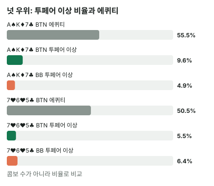

안녕하세요. A25에서 레인지 대 레인지 에퀴티로 레인지 우위를 숫자로 봤고, E04에서는 텍스처마다 솔버의 c-bet이 달라지는 걸 레인지 구성으로 따져 봤죠. 그때 모노톤 보드에서 "개수는 BB, 꼭대기는 BTN"이라는 말이 나왔어요.
오늘은 그 말을 정식으로 나눠 봐요. 평균으로 앞서는 것과 가장 강한 핸드를 더 많이 가진 것은 같은 이야기일까요? 두 보드를 콤보로 직접 세어 보면 답이 나와요.
이 글에서 배울 것
- 레인지 우위(평균)와 넛 우위(꼭대기 핸드 비율)를 각각 정의하고 따로 세는 법
- 평균은 BTN이 앞서는데 꼭대기는 BB가 더 많은 보드가 왜 생기는지
- 넛 우위는 "어디부터 강한 핸드로 칠지" 기준을 정해야 셀 수 있다는 것
1단계. 두 가지 우위
한 줄 정의
- 레인지 우위 = 두 레인지를 통째로 붙였을 때 에퀴티(평균)가 높은 쪽(A25)
- 넛 우위 = 그 보드에서 가장 강한 핸드 묶음의 콤보 비율이 높은 쪽
넛은 그 보드에서 가능한 가장 강한 핸드예요. 넛 하나만 세면 콤보가 너무 적어서, 오늘은 투페어 이상(셋·스트레이트 포함)을 "강한 핸드"로 정해 셀게요. 이 기준은 오늘 글의 약속이에요. 스트레이트가 가능한 보드에서는 투페어가 넛이 아니라는 점도 기억해 두세요.
비유: 반 평균과 90점 넘은 학생 수
두 반의 시험을 비교한다고 해 볼게요. 반 평균이 높은 반이 꼭 90점 넘은 학생도 더 많은 건 아니에요. 평균이 높은 반은 70~80점대가 두껍고, 다른 반은 바닥이 낮아도 꼭대기에 몇 명이 몰려 있을 수 있죠.
이게 무슨 뜻이냐면, 레인지 우위는 레인지 전체의 두께를 보고, 넛 우위는 레인지의 꼭대기만 봐요. 보는 곳이 다르니 결론이 갈릴 수 있어요.
오늘의 가정 레인지 (솔버 결과 아님, A25와 같음)
- BTN 오픈: 22+, A2s+, A7o+, K8s+, KTo+, Q9s+, QTo+, J9s+, JTo, T8s+, 98s, 87s, 76s, 65s
- BB 콜: 22-JJ, A2s-AJs, A7o-AJo, K5s-KQs, KTo-KQo, Q8s+, QTo+, J8s+, JTo, T7s+, 97s+, 86s+, 75s+, 64s+, 54s
두 레인지의 모양부터 보세요. BB는 QQ+·AK·AQ를 3벳한다고 가정해서 콜 레인지에 없어요. 대신 BB에는 75s·64s·54s·86s·97s 같은 낮은 수딧 커넥터가 있고, BTN에는 없어요.
결론부터 말하면, 이 가정에서 A♠ K♦ 7♣는 BTN이 두 우위를 모두 갖고, 7♥ 6♥ 5♣는 평균은 BTN이 근소하게 앞서지만 투페어 이상 콤보 비율은 BB가 조금 더 높아요.
2단계. 두 보드를 나란히
| 보드 | BTN 에퀴티 | 투페어 이상 BTN | 투페어 이상 BB |
|---|---|---|---|
| A♠ K♦ 7♣ | 약 55.6% | 27 ÷ 282콤보(약 9.6%) | 14 ÷ 286콤보(약 4.9%) |
| 7♥ 6♥ 5♣ | 약 50.5% | 18 ÷ 327콤보(약 5.5%) | 20 ÷ 311콤보(약 6.4%) |

넛 우위는 콤보 개수가 아니라 비율로 비교해요. 두 레인지의 전체 콤보 수가 다르거든요. 7♥ 6♥ 5♣에서 BTN 327콤보, BB 311콤보처럼요.
3단계. A♠ K♦ 7♣: 꼭대기가 BTN에 몰린 보드
BTN의 투페어 이상
BTN = 3(AA) + 3(KK) + 3(77) + 9(AK, 3 × 3) + 9(A7) = 27
AA·KK·77은 보드에 한 장씩 있어 남은 3장 중 두 장이라 3씩, AK는 남은 A 3장 × 남은 K 3장 = 9예요. A7도 3 × 3 = 9(BTN은 A7o+와 수딧 A 전부를 오픈)예요. 이 보드의 진짜 넛 하나를 꼽으면 AA 셋인데, BB 레인지에는 없어요.
BB의 투페어 이상
BB = 3(77) + 9(A7) + 2(K7s) = 14
반면 BB에는 AA·KK·AK가 없어요(3벳했다고 가정). 남은 건 77 셋, A7 투페어(BB는 A7s와 A7o를 둘 다 콜), K7s 투페어뿐이에요. K7s는 BB에만 있어요(BTN은 K8s+만 오픈). K7s가 2인 이유는 K♦·7♣가 보드에 있어서, 같은 무늬로 남은 짝이 스페이드·하트 두 가지뿐이라서예요.
이게 무슨 뜻이냐면
이 보드의 꼭대기 핸드(AA·KK 셋, AK 탑 투페어)는 프리플랍에 BB가 3벳으로 빼 간 핸드예요. 그래서 꼭대기는 BTN에 몰리고, A·K가 많은 BTN은 평균도 앞서요. 두 우위가 같은 방향이에요.
4단계. 7♥ 6♥ 5♣: 평균과 꼭대기가 갈리는 보드
양쪽에 다 있는 강한 핸드
- 셋: 77·66·55는 보드에 한 장씩 있어 3씩 → 3 × 3 = 9
- 98s(스트레이트 9-8-7-6-5): 무늬 4가지 = 4. 이 보드의 진짜 넛인데, 양쪽 다 오픈·콜하는 핸드예요
- 76s(투페어): 7♥·6♥가 보드에 있어 하트를 빼면 4 − 1 = 3
- 65s(투페어): 6♥·5♣ 때문에 4 − 2 = 2
9 + 4 + 3 + 2 = 18
BTN의 투페어 이상은 여기서 끝이에요.
BB에만 있는 핸드: 75s
BB는 위 18에 75s가 더 있어요.
- 7♥·5♣가 보드에 있어 4 − 2 = 2콤보
- 보드와 합쳐 7·5 투페어라 오늘 기준에 들어가요
- BTN 오픈 레인지(76s·65s까지)에는 없어요
이 75s가 BTN 레인지를 상대로 내는 에퀴티는 약 78.7%예요. 꼭대기 묶음답게 크게 앞서죠.
BB = 18 + 2 = 20
그런데 평균은 왜 BTN이 앞설까
BTN에는 BB가 3벳으로 빼 간 AA·KK·QQ 오버페어가 있어요. 이 핸드들은 투페어 이상은 아니지만 BB 레인지를 상대로 꽤 앞서요. 예를 들어 BTN의 AA는 BB 레인지 상대 약 76.9%, KK는 약 73.2%예요.
BB에는 이런 오버페어가 JJ까지밖에 없어요. 꼭대기에서 2콤보 앞서도, 꼭대기 바로 아래에서 BTN에게 밀리는 거예요. 그래서 평균은 BTN이 약 50.5%로 근소하게 앞서요.
"AA가 76.9%면 75s(78.7%)와 거의 같은데 왜 꼭대기가 아니에요?" 하실 수 있어요. 오늘의 꼭대기는 에퀴티가 아니라 족보로 그은 선(투페어 이상)이라, 오버페어는 선 밖이에요. 선을 어디 긋느냐가 약속인 이유가 이거예요.
이게 무슨 뜻이냐면
이 보드는 평균은 BTN, 꼭대기는 BB 쪽으로 조금 갈렸어요. 프리플랍에 BTN만 가진 핸드(오버페어)는 중간을 받치고, BB만 가진 핸드(낮은 커넥터)는 꼭대기를 채운 거예요.
왜 그럴까: 두 우위는 프리플랍에 "누가 무엇을 빼 갔나"에서 나와요
레인지는 프리플랍 액션이 깎아 만든 모양이에요
BTN 오픈 레인지와 BB 콜 레인지는 같은 핸드에서 서로 다른 것을 빼고 남은 것이에요. BB는 가장 센 핸드(QQ+·AK·AQ)를 3벳으로 빼 가고, 대신 싸게 볼 수 있는 낮은 수딧 커넥터를 콜로 남겨요. BTN은 낮은 커넥터 일부를 오픈하지 않고요.
그러니 플랍이 깔리는 순간 질문은 하나예요. "이 보드의 꼭대기 핸드는 누가 빼 간 핸드인가, 누가 남긴 핸드인가?"
- A♠ K♦ 7♣: 꼭대기(AA·KK·AK)를 BB가 3벳으로 빼 갔어요 → 꼭대기가 BTN에 남음
- 7♥ 6♥ 5♣: 꼭대기 일부(75s)를 BTN이 오픈하지 않았어요 → 꼭대기가 BB에 남음
평균은 "몸통", 넛은 "머리"
레인지 에퀴티는 모든 콤보의 에퀴티를 평균 낸 값이라, 콤보 수가 많은 중간 핸드(몸통)가 크게 좌우해요. 넛 우위는 꼭대기 몇 콤보(머리)만 봐요.
7♥ 6♥ 5♣에서 BB가 앞선 건 2콤보예요. 레인지 전체 311콤보 중 2콤보는 평균을 거의 못 움직여요. 하지만 벳이 커질수록 콜하는 쪽에 필요한 에퀴티가 올라가고, 큰 벳에 맞서 버틸 수 있는 건 결국 꼭대기 핸드예요. 그래서 큰 벳이 오가는 상황에서는 그 몇 콤보가 누구 손에 있느냐가 따로 중요해져요.
기준을 바꾸면 결론도 바뀔 수 있어요
오늘은 투페어 이상을 꼭대기로 정했어요. 그런데 이 기준을 더 높이거나 낮추면 꼭대기에 들어오는 핸드가 바뀌어서, 넛 우위의 크기가 달라져요(보드에 따라서는 방향이 바뀔 수도 있어요). 그래서 넛 우위를 말할 때는 "어느 족보부터"를 늘 같이 말해야 해요. 연습 문제 3에서 직접 바꿔 봐요.
자주 하는 실수
실수 1. "평균이 앞서니까 강한 핸드도 내가 더 많다" 7♥ 6♥ 5♣에서 BTN은 에퀴티 약 50.5%로 앞섰지만, 투페어 이상 비율은 5.5% 대 6.4%로 BB가 높았어요. 평균을 받친 건 AA·KK 같은 오버페어였고, 그건 꼭대기 핸드가 아니에요. 대신 평균과 꼭대기를 따로 세요.
실수 2. 넛 우위를 콤보 개수로 비교하기 7♥ 6♥ 5♣에서 BTN 18콤보, BB 20콤보라 "2개 차이"로만 보면, 레인지 크기 차이(327 대 311)를 놓쳐요. 개수로는 BB가 2개 더 많아 꽤 차이 나 보이지만 비율로는 5.5%와 6.4%, 1%포인트도 안 되는 차이예요. 기준 족보를 바꾸면 개수와 비율이 서로 다른 말을 하기도 해요. 대신 "강한 핸드 ÷ 레인지 전체" 비율로 비교해요.
실수 3. 보드만 보고 "낮은 보드는 BB 보드" 낮고 연결된 보드에서 BB가 꼭대기를 조금 더 가진 건 맞았지만, 평균은 여전히 BTN이었어요. 그리고 그 결론은 BB가 QQ+·AK·AQ를 3벳한다는 오늘 가정 레인지에서 나온 거예요. 대신 보드 모양이 아니라 두 레인지에 실제로 무엇이 남았나로 판단해요.
"넛 우위가 있으면 뭐가 달라져요?"
좋은 질문이에요. 이 가정에서는 꼭대기 핸드를 더 가진 쪽이 큰 벳으로 팟을 키울 근거가 생긴다고 읽을 수 있어요. 벳이 클수록 상대는 콜에 더 높은 에퀴티가 필요해지는데(B07의 필요 에퀴티), 그 벳에 밸류로 쓸 핸드가 꼭대기 핸드거든요. 꼭대기를 더 가진 쪽이 큰 벳의 밸류를 더 많이 채울 수 있는 거예요.
E04의 모노톤 보드에서 플러시 개수는 BB가 많아도 A 하이 넛 플러시는 BTN에만 있었고, BTN의 큰 벳 비중이 드라이보다 컸던 것과 같은 방향이에요. 다만 E04는 헤즈업 솔버 레인지, 오늘은 A25 가정 레인지라 숫자는 따로예요. 큰 벳 레인지를 어떤 모양으로 짜는지는 E09에서 다뤄요.
숫자가 뒤집히는 지점
기준은 한쪽 레인지에만 있는 핸드가 그 보드에서 꼭대기(기준 족보 이상)가 되는지예요. 오픈한 쪽에만 있는 높은 페어·AK가 꼭대기가 되면 넛 우위는 오픈한 쪽, 콜한 쪽에만 있는 커넥터가 꼭대기가 되면 콜한 쪽으로 넘어가요.
선생님의 한마디
플랍이 깔리면 이 순서로 봐요.
- 이 보드에서 꼭대기로 칠 족보부터 정하기(셋 이상인지, 투페어 이상인지)
- 그 족보에 드는 핸드 중 한쪽 레인지에만 있는 핸드 이름을 대기
- 개수가 아니라 비율로 한 번 더 확인하기
연습 문제
학습툴 에퀴티 계산기에는 레인지 입력이 없어서, 문제 1·2처럼 내 카드 vs 상대 카드와 플랍 3장을 넣어 확인해 보세요. 레인지 숫자는 블로그에서 직접 계산한 값이에요.
문제 1. 7♥ 6♥ 5♣에서 Hero(BB)가 7♠5♠, 상대(BTN)가 A♦A♣예요. Hero의 에퀴티는? 그리고 상대가 A♦A♣ 대신 8♥8♦였다면, 그 핸드는 오늘 기준(투페어 이상)에 들어갈까요?
정답 보기
약 72.1%(상대 약 27.9%). 990가지 턴·리버 중 Hero가 690가지를 이기고 48가지는 비겨요. 8♥8♦는 오버페어(원페어)라 들어가지 않아요. 평균을 받쳐 주는 핸드와 꼭대기 핸드는 이렇게 달라요.
문제 2. A♠ K♦ 7♣에서 Hero(BTN)가 A♥K♥, 상대(BB)가 7♦7♥예요. Hero의 에퀴티는?
정답 보기
약 16.8%(상대 약 83.2%). 990가지 중 Hero가 이기는 건 166가지뿐이에요. BTN이 두 우위를 다 가진 보드라도, BB 레인지에 남은 77 셋에는 탑 투페어가 크게 뒤져요. 넛 우위는 레인지 비율의 이야기이고, 한 판의 결과는 따로예요.
문제 3. 강한 핸드 기준을 셋 이상(투페어는 뺌)으로 올리면, 7♥ 6♥ 5♣에서 넛 우위는 누구 쪽일까요? 4단계의 핸드 목록에서 직접 골라 세어 보세요.
정답 보기
투페어(76s·65s·75s)가 빠지고 셋 9콤보와 98s 스트레이트 4콤보만 남아요. 이 둘은 양쪽에 다 있어서 개수는 13 대 13으로 같아요. 그런데 비율로는 BTN 13 ÷ 327(약 4%), BB 13 ÷ 311(약 4.2%)로 BB가 아주 조금 높아요. 레인지가 더 좁은 BB 쪽 비율이 올라가는 거예요. 투페어 이상에서 BB가 앞섰던 큰 몫은 BB에만 있는 75s 투페어 덕분이었으니, 기준을 셋으로 올리면 그 차이가 거의 사라져요. 같은 보드라도 기준 족보를 어디 두느냐에 따라 넛 우위의 크기가 달라져요.
핵심 정리
- 레인지 우위는 레인지 전체의 평균, 넛 우위는 꼭대기 핸드의 비율이에요. 보는 곳이 달라 결론이 갈릴 수 있어요
- 넛 우위는 기준 족보를 정하고, 콤보 비율로 비교해요. 기준을 바꾸면 크기가 달라질 수 있어요
- 두 우위는 프리플랍에 누가 무엇을 빼 갔는지에서 나와요. 3벳으로 빠진 핸드, 오픈하지 않은 핸드를 떠올려요
- 평균은 콤보가 많은 몸통이, 넛 우위는 꼭대기 몇 콤보가 정해요
정리하며
오늘은 같은 가정 레인지를 두 보드에 놓고, 평균과 꼭대기를 따로 셌어요.
A♠ K♦ 7♣에서는 꼭대기 핸드인 AA·KK·AK를 BB가 3벳으로 빼 가서, BTN이 평균과 꼭대기를 모두 가졌어요. 7♥ 6♥ 5♣에서는 BTN의 오버페어가 평균을 받쳤지만, BTN이 오픈하지 않은 75s가 BB의 꼭대기를 채워 투페어 이상 비율은 BB가 조금 높았죠.
오늘 하나만 가져가면 돼요. 플랍을 보면 "평균은 누구, 꼭대기는 누구"를 따로 묻고, 꼭대기는 프리플랍에 빠진 핸드에서 찾아보세요.
다음 글 E06에서는 다시 헤즈업 솔버 숫자로 돌아가요. 상대가 얼마나 접느냐에 따라 보드마다 c-bet 빈도가 어떻게 달라지는지 봐요.
AI 작성 · 숫자는 계산 검증 (플랍 뒤 남은 카드를 전부 센 정확값, 콤보 동일 가중) · 가정 레인지 기준 (솔버 결과 아님) · 강한 핸드 기준은 투페어 이상(문제 3은 셋 이상) · 개념 글(콜/폴드 결정 없음)